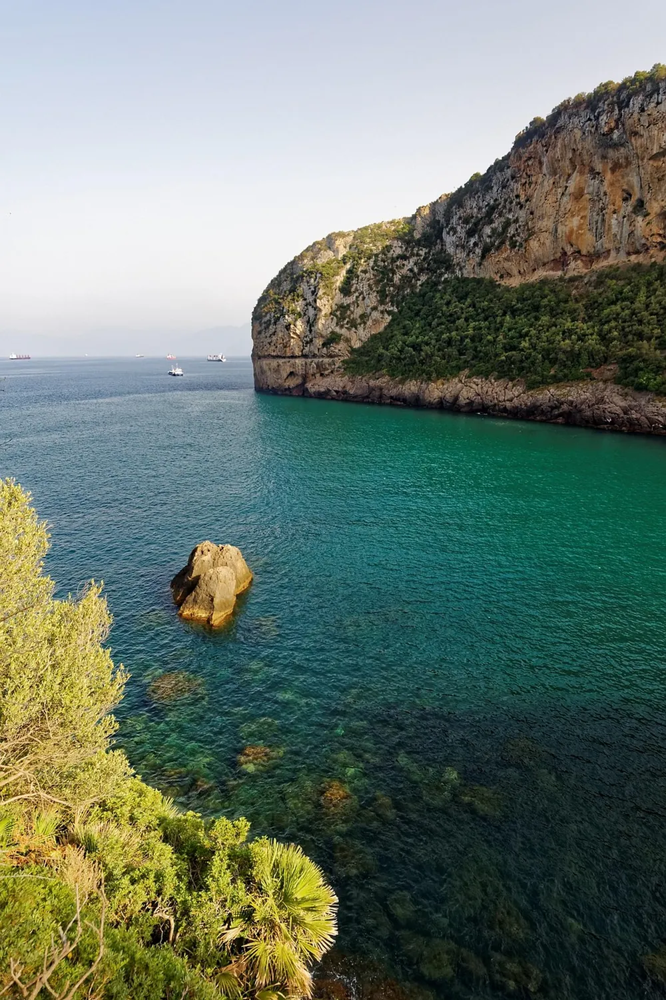
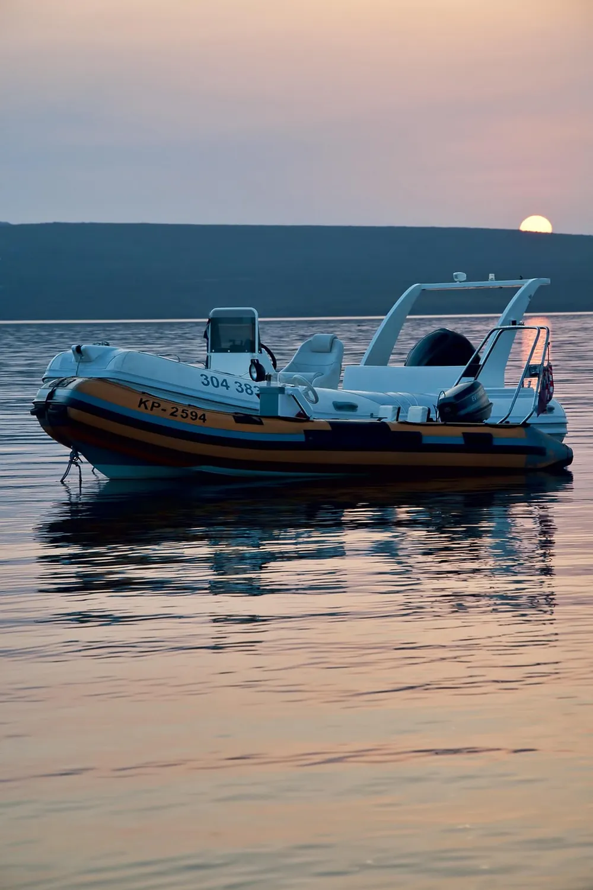
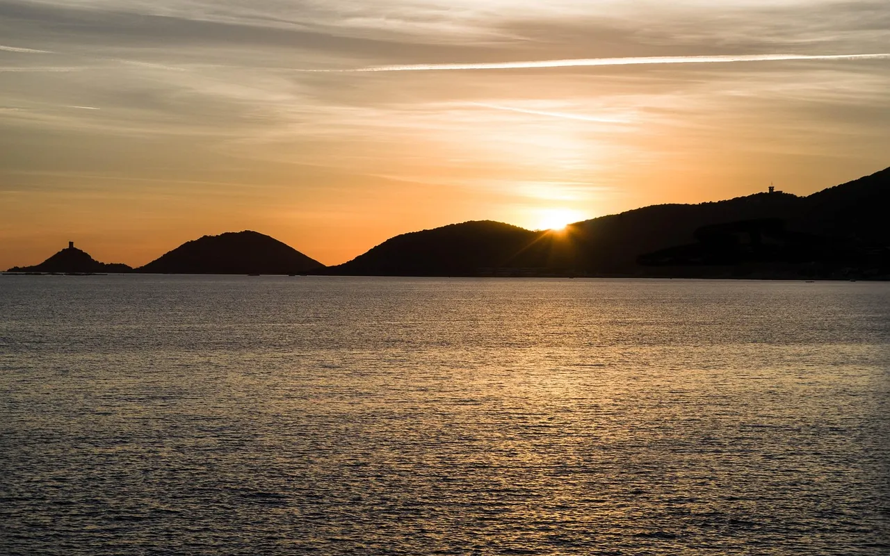

LIBECCIU
Kayaks, bateaux et jet-skis
À louer à l'heure ou à la journée, depuis le ponton de la plage, dans le golfe d'Ajaccio.
Réserver une sortieLe bulletin du ponton,
Flotte
Gilets, bidon étanche et carte des criques fournis avec chaque location. Ouvrez une ligne pour voir les prix.
Les prix sont par embarcation, pas par personne. L'essence des bateaux à moteur se règle au réel, à votre retour.